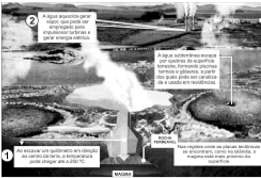
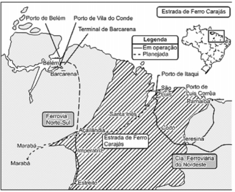

CLIENTES - POLOS

Tenha acesso a provas sem fazer precisar fazer login. Para ter acesso a centenas de simulados de provas para estudar, tudo de forma rápida, simples e segura, faça o login com seu RA e senha.SAIBA MAIS
Disciplina: 680480 - RECURSOS NATURAIS E FONTES DE ENERGIA
Questão 1: Empresa vai fornecer 230 turbinas para o segundo complexo de energia a base de ventos, no sudeste da Bahia. O Complexo Eólico Alto Sertão, em 2014, terá capacidade para gerar 375 MW (megawatts), total suficiente para abastecer uma cidade de 3 milhões de habitantes. ( MATOS, C. GE busca bons ventos e fecha contrato de R$ 820 mi na Bahia. Folha de S.Paulo,2 dez. 2012. ) A opção tecnológica retratada na notícia proporciona a seguinte consequência para o sistema energético brasileiro: A) Redução da utilização elétrica. B) Ampliação do uso bioenergético. C) Expansão das fontes renováveis. D) Contenção da demanda urbano-industrial. E) Intensificação da dependência geotérmica.
Questão 2: A questão energética contemporânea, especialmente no que se refere ao uso de combustíveis fósseis, pode ser olhada sob uma perspectiva mais ampla. A vida na Terra tem alguns bilhões de anos.Nossa espécie, que surgiu há cerca de 150 mil anos, produz ferramentas há cerca de 40 mil anos, usa carvão mineral há cerca de 300 anos e petróleo há cerca de 100 anos. Esses recursos energéticos, devidos à longa deposição de organismos, encontram-se em diversas regiões, algumas delas hoje desérticas. O consumo combinado atual desses combustíveis, sobretudo na indústria e nos transportes, equivale a uma queimada ordem de 100 milhões de barris de petróleo por dia, fato que preocupa pelo aumento, na atmosfera, degases responsáveis pelo efeito estufa. Da leitura desse texto, é correto afirmar que: A) Há regiões desérticas que podem já ter sido oceanos, das quais extraímos hoje o que aí foi produzido muito antes da existência humana. B) Sendo os combustíveis fósseis gerados em processo contínuo, estes poderiam ser utilizados indefinidamente, não fosse o aumento do efeito estufa. C) O consumo atual de combustíveis fósseis na indústria e nos transportes é reposto pela deposiçãodiária de biomassa fóssil. D) Os seres humanos, nos últimos 100 anos, são responsáveis por boa parte da geração de combustíveis fósseis, a partir da biomassa disponível. E) O que era carvão mineral, em passado remoto, transformou-se em petróleo nos períodos recentes.
Questão 3: O meio ambiente foi estudado por nós como um Sistema: A) Simples. B) Complexo. C) Ordenado. D) Singular. E) Homogêneo.
Questão 4: No que se refere às rochas, o basalto, riolito, diabásio, pedra pome ou púmice são de origem: A) Sedimentar. B) Vulcânica. C) Metamórfica. D) Nuclear. E) Sedimentar orgânica.
Questão 5: Considere a figura a seguir:  Ziegler, M.F. “Energia Sustentável”. Revista IstoÉ. 28 abr. 2010. A fonte de energia representada na figura, considerada uma das mais limpas e sustentáveis do mundo, é extraída do calor gerado no subsolo a partir: A) Da circulação do magma no subsolo. B) Das erupções constantes dos vulcões. C) Do sol que aquece as águas com radiação ultravioleta. D) Da queima do carvão e combustíveis fósseis. E) Dos detritos e cinzas vulcânicas.
Questão 6: Trata-se de um produto retirado da casca de algumas árvores pantaneiras, ou do cerrado,e que se utiliza para curtimento do couro, pode ser extraído do buriti, barbatimão, ou do quebracho. Estamos nos referindo a: A) Tanino. B) Angico. C) Canela. D) Ipê. E) Andiroba.
Questão 7: Leia o texto a seguir: Hoje acabam todos os recursos naturais gerados para o futuroA partir de hoje a Terra entra no vermelho. Segundo dados da Global Footprint Network (GFN), uma organização de pesquisa que mede a pegada ecológica do homem no planeta, em menos de 8 meses, esgotamos todos os recursos que a natureza é capaz de oferecer de forma sustentável no período de um ano.Este 19 de agosto é o dia da Sobrecarga da Terra(em inglês, Overshoot Day). Isto significa que pelo resto do ano, vamos manter o nosso déficit ecológico: reduziremos nossas reservas e aumentaremos ainda mais a quantidade de CO2 produzido na atmosfera (...). De acordo com os cálculos da GFN, seria necessário 1,5 planeta para produzir os recursos ecológicos necessários para suportar a atual pegada ecológica mundial. (Beatriz de Souza. Revista Exame, 19/08/2014) Assinale a melhor medida possível para a solução ou a diminuição do problema apontado pelo texto acima: A) Conscientizar as pessoas a abandonarem o consumo de matérias-primas em geral. B) Criar tecnologias que façam com que o homem não utilize mais recursos naturais. C) Reduzir o consumo, reaproveitar os produtos que consumimos e reciclar o lixo. D) Reflorestar tudo o que for desmatado e recuperar rapidamente os solos erodidos. E) Deixar de produzir mercadorias fabricadas com recursos não renováveis.
Questão 8: O processo de devastação do Cerrado é um exemplo de como o uso não controlado dos recursos naturais pode causar profundos impactos na natureza, tais como a extinção de espécies vegetais e animais, além de uma menor disponibilidade de recursos e matérias-primas. A principal causa para a destruição de grande parte do Cerrado foi: A) A expansão das áreas de cultivo agrícola. B) O crescimento das cidades do Centro-Oeste. C) A diminuição das políticas de controle de pragas naturais. D) A maior presença de indústrias em áreas de preservação florestal. E) A fragilidade do Cerrado diante das transformações climáticas.
Questão 1: O Bioma Amazônico é definido por suas condições climáticas, fisionomia vegetal e localização geográfica. Mencione três características, no mínimo, sobre o Bioma Amazônico:
Questão 2: Observe o mapa a seguir:  Identifique o projeto mineral destacado no mapa e teça um comentário sobre ele.
O Gerenciador completo do seu Polo
Se existe algo que tira a paciência e o sono de qualquer gestor em um negócio, é a demora para obter respostas que deveriam estar disponíveis rapidamente para auxiliar não somente em tomada de decisões como em ações comerciais que tragam dinheiro para a empresa.
Saiba mais
Rua Júlio Câmara, 706 - Anexo 1 - Centro, Afogados da Ingazeira - PE, 56800-000